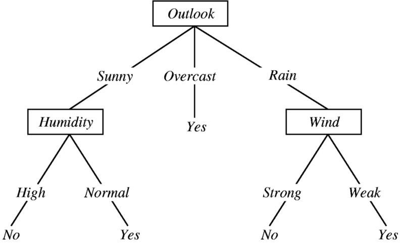

DECISION TREE dengan Python dan Scikit-Learn¶
Pengertian Decision Tree¶
Decision Tree adalah struktur seperti bagan alur di mana setiap simpul internal mewakili tes pada fitur (misalnya apakah koin balik muncul kepala atau ekor), setiap simpul daun mewakili label kelas (keputusan diambil setelah menghitung semua fitur) dan cabang mewakili konjungsi fitur yang mengarah ke label kelas tersebut. Jalur dari root ke daun mewakili aturan klasifikasi. Diagram di bawah menggambarkan aliran dasar pohon keputusan untuk pengambilan keputusan dengan label (Rain (Ya), No Rain (Tidak)).

Decision tree adalah salah satu pendekatan pemodelan prediktif yang digunakan dalam statistik dan data mining.
Decision Tree dibangun melalui pendekatan algoritmik yang mengidentifikasi cara-cara untuk membagi set data berdasarkan kondisi yang berbeda. Ini adalah salah satu metode yang paling banyak digunakan dan praktis untuk pembelajaran yang diawasi. Pohon Keputusan adalah metode pembelajaran yang diawasi non-parametrik yang digunakan untuk tugas klasifikasi dan regresi.
Model pohon di mana variabel target dapat mengambil set nilai diskrit disebut pohon klasifikasi. Pohon keputusan di mana variabel target dapat mengambil nilai kontinu (biasanya bilangan real) disebut pohon regresi. Pohon Klasifikasi Dan Regresi (CART) adalah istilah umum untuk ini.
INFORMATION GAIN¶
Information Gain digunakan untuk memutuskan fitur mana yang harus dibagi pada setiap langkah dalam membangun pohon. Kesederhanaan adalah yang terbaik, jadi kami ingin menjaga pohon kami tetap kecil. Untuk melakukannya, pada setiap langkah kita harus memilih pemisahan yang menghasilkan simpul anak paling murni. Ukuran kemurnian yang biasa digunakan disebut informasi. Untuk setiap simpul pohon, nilai informasi mengukur seberapa banyak informasi fitur memberi kita tentang kelas. Pemisahan dengan perolehan informasi tertinggi akan diambil sebagai pemisahan pertama dan proses akan berlanjut sampai semua node anak-anak murni, atau sampai informasi diperoleh 0. $$ \operatorname{Info}(\mathrm{D})=-\sum_{i=1}^{m} p i \log _{2} p i $$
Penerapan Decision Tree classifier pada Python dengan sklearn Library¶
Importing Python Machine Learning Libraries
Bagian ini melibatkan mengimpor semua library yang akan kita gunakan. Kami mengimpor modul numpy dan sklearn train_test_split, DecisionTreeClassifier & modul accuracy_score.
import numpy as np import pandas as pd from sklearn.cross_validation import train_test_split from sklearn.tree import DecisionTreeClassifier from sklearn.metrics import accuracy_score from sklearn import tree
Import Data
Untuk mengimpor data dan memanipulasinya, kita akan menggunakan kerangka data panda. Pertama-tama, kita perlu mengunduh dataset. Anda dapat mengunduh dataset dari sini. Semua nilai data dipisahkan oleh koma.
Setelah mengunduh file data, kami akan menggunakan metode Pandas read_csv () untuk mengimpor data ke dalam kerangka data panda. Karena data kami dipisahkan dengan koma "," dan tidak ada header dalam data, jadi kami akan menempatkan nilai parameter header "None" dan nilai parameter sep sebagai ",".
balance_data = pd.read_csv( 'https://archive.ics.uci.edu/ml/machine-learning-databases/balance-scale/balance-scale.data', sep= ',', header= None)
Untuk mengecek panjang & dimensi dari dataframe,kami menggunakan len() method & “.shape”. Dan untuk mengecek 5 data awal dari dataframe.
print "Dataset Lenght:: ", len(balance_data) print "Dataset Shape:: ", balance_data.shape print "Dataset:: " balance_data.head()
Data Slicing
Pelatihan dan pengujian pada data yang sama bukanlah pendekatan yang optimal, jadi kami membagi data menjadi dua bagian, training, dan testing. Kami menggunakan fungsi ‘train_test_split’ untuk membagi data.
X_train, X_test, y_train, y_test = train_test_split( X, Y, test_size = 0.3, random_state = 100)
Cuplikan di atas akan membagi data menjadi set pelatihan dan tes. X_train, y_train adalah data pelatihan & X_test, y_test milik dataset uji.
Parameter test_size diberi nilai 0,3; itu berarti set tes akan menjadi 30% dari seluruh dataset & ukuran dataset pelatihan akan menjadi 70% dari seluruh dataset. variabel random_state adalah keadaan generator angka pseudo-acak yang digunakan untuk pengambilan sampel acak. Jika Anda ingin mereplikasi hasil kami, maka gunakan nilai random_state yang sama.
Decision Tree Training
Sekarang kita cocok dengan algoritma pohon keputusan pada data pelatihan, memprediksi label untuk dataset validasi dan mencetak akurasi model menggunakan berbagai parameter.
DecisionTreeClassifier (): Ini adalah fungsi classifier untuk DecisionTree. Ini adalah fungsi utama untuk mengimplementasikan algoritma. Mari kita buat pengklasifikasi menggunakan kriteria Information Gain. Kita harus menyesuaikan classifier kita menggunakan fit (). Kami akan memplot visualisasi classifier pohon keputusan kami juga.
clf_entropy = DecisionTreeClassifier(criterion = "entropy", random_state = 100, max_depth=3, min_samples_leaf=5) clf_entropy.fit(X_train, y_train)
Prediction
Kami siap memprediksi kelas untuk set test kami. Kita dapat menggunakan metode predict ().
y_pred_en = clf_entropy.predict(X_test) y_pred_en
Menghitung Accuracy Score
Function akurasi_score () akan digunakan untuk mencetak akurasi algoritma Decision Tree. Secara akurat, maksud kami adalah rasio titik data yang diprediksi dengan benar dengan semua titik data yang diprediksi. Akurasi sebagai metrik membantu memahami efektivitas algoritme kami.
print "Accuracy is ", accuracy_score(y_test,y_pred_en)*100
Penutup¶
Pada artikel ini, kita telah belajar bagaimana memodelkan algoritma pohon keputusan dalam Python menggunakan pustaka pembelajaran mesin Python scikit-learn. Dalam prosesnya, kami belajar bagaimana membagi data menjadi data train dan test. Untuk memodelkan classifier pohon keputusan, kami menggunakan gain informasi. Pada akhirnya, kami menghitung keakuratan model Decision Tree ini.
Terima kasih telah membaca dan beri tahu kami saran / koreksi Anda jika ada.